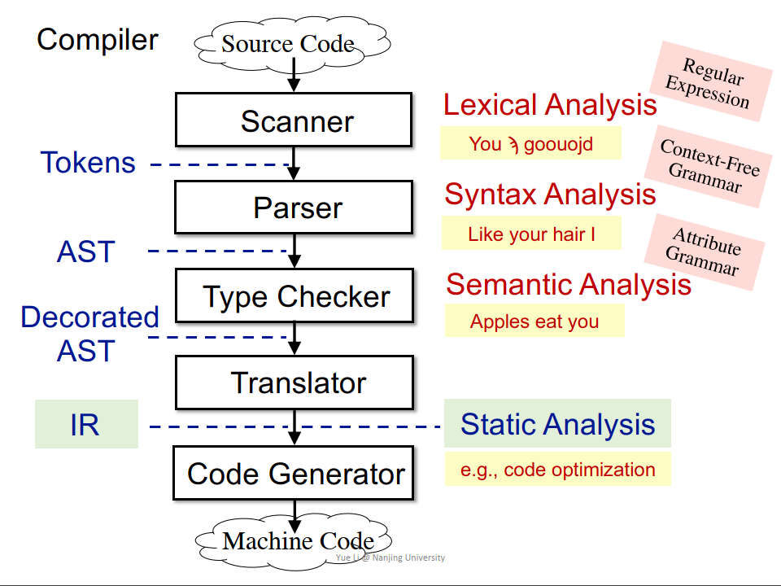
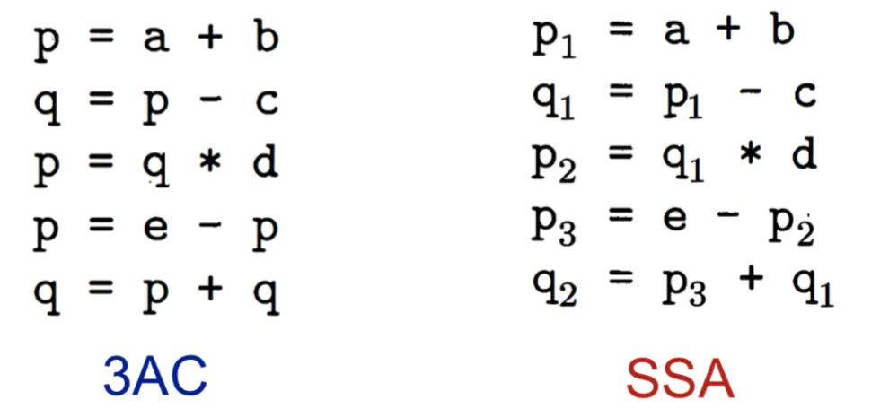
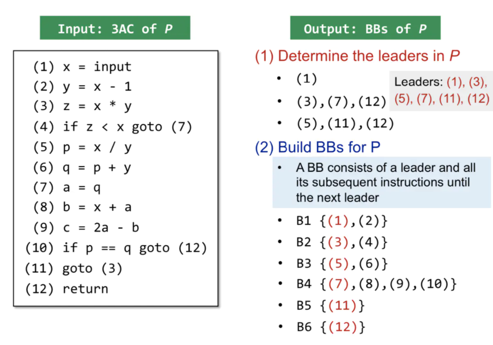
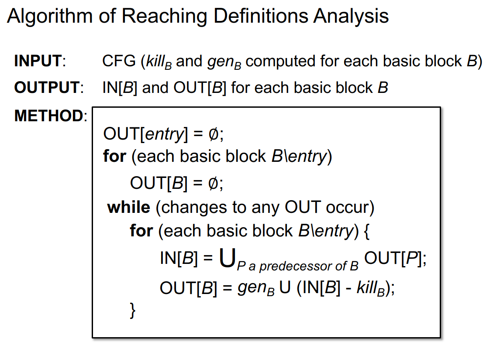
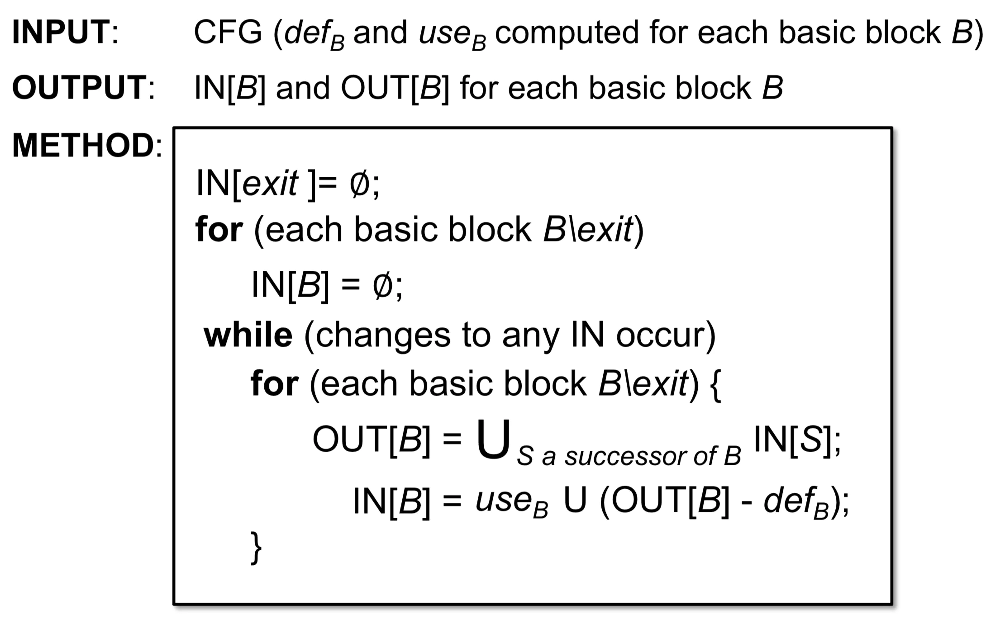
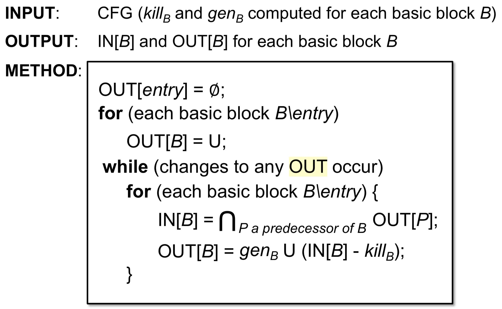
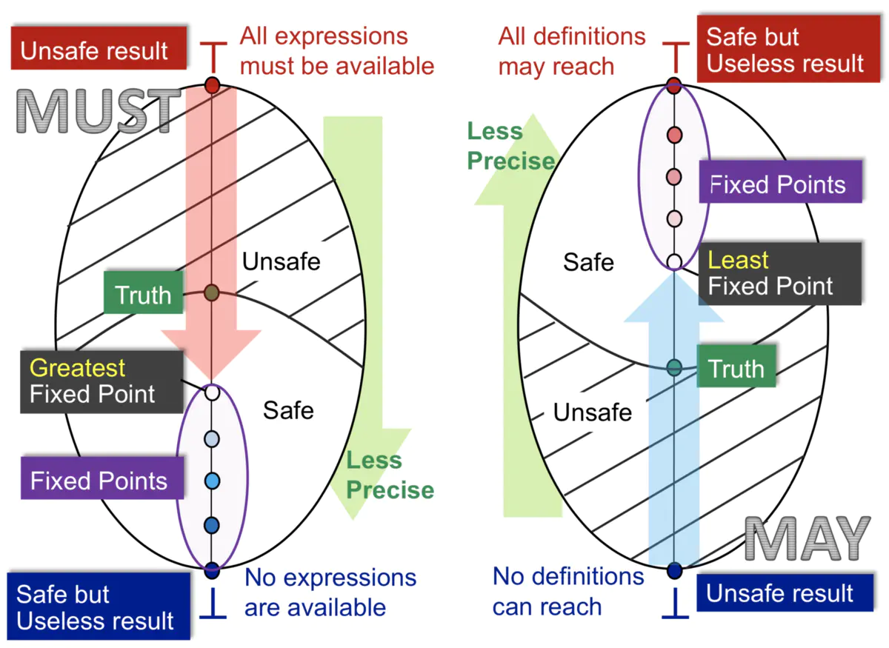

静态分析笔记
1 定义介绍
静态分析：抽象 + 过近似(Over-approximate)
sound: Over-approximate 将所有可能的程序行为均包括（大于）。
complete: Under-approximate 所有包含的程序行为都是程序运行的。
false negatives: 漏报
false positives: 误报
2 IR
1. 编译器和静态分析
源码->（Scanner - 词法Lexical分析-Regular Expression）->（Parser- 语法Syntax分析-Context-Free Grammar）， 生成AST ->（Type Checker - 语义Semantic分析 - Attribute Grammar），生成 Decorated AST -> Translator，生成IR，进行静态分析 -> Code Generator

2. AST vs. IR
AST: 高级，更接近于语法结构，依赖于语言种类，适用于快速类型检查，缺少控制流信息
IR: 低级，更接近于机器码，不依赖语言种类，压缩且简洁，包含控制流信息。是静态分析的基础
3. 3地址码（3AC）
a+b+3 -> t1 = a + b
t2 = t1 + 34. SSA 静态单赋值
定义：给每一个定义变量一个新的名字，传递到接下来的使用当中，每个变量有1个定义（赋值的目标变量）。

优点：唯一的变量名可以间接体现程序流信息，简化分析过程；清楚的Define-Use信息。
缺点：引入很多变量和phi-function；转换为机器码时效率变低（引入很多拷贝操作）。
5. Basic Blocks
定义：只有1个开头入口和1个结尾出口的最长3-地址指令序列。
建立方法:
- 第一条指令是入口;
- 任何跳转指令的目标地址是入口；
- 任何跟在跳转指令之后的指令是入口。
- 然后构造基本块，任何基本块包含1个入口指令和其接下来的指令。

6. Control Flow Analysis（CFG）
建立基本块之后，建立边的方法
建立方法：
- 基本块A的结尾有跳转指令跳转到基本块B；
- 原始指令序列中，B紧跟着A，且A的结尾不是无条件跳转。
- 添加Entry / Exit：没有块跳转到该块 / 没有跳转到其他块。
3 数据流分析 Applications
1. 预备知识
may analysis：输出可能正确的信息（需做over-approximation优化，才能成为Safe-approximation安全的近似，可以有误报-completeness），注意大多数静态分析都是may analysis
must analysis：输出必须正确的信息（需做under-approximation优化，才能成为Safe-approximation安全的近似，可以有漏报-soundness）
输入/输出状态：程序执行前/执行后的状态（本质就是抽象表达的数据的状态，如变量的状态）。
数据流分析的结果：最终得到，每一个程序点对应一个数据流值(data-flow value)，表示该点所有可能程序状态的一个抽象。例如，我只关心x、y的值，我就用抽象来表示x、y所有可能的值的集合（输入/输出的值域/约束），就代表了该程序点的程序状态。
- Forward Analysis前向分析：按程序执行顺序的分析。OUT[s]=fs(IN[s])，s-statement
- Backward Analysis反向分析：逆向分析。IN[s]=fs(OUT[s])
控制流约束：约束求解做的事情，推断计算输入到输出，或反向分析。
2. Reaching Definition Analysis (may analysis)
问题定义：给变量v一个定义d（赋值），存在一条路径使得程序点p能够到达q，且在这个过程中不能改变v的赋值。
应用例子：检测未定义的变量，若v可达p且v没有被定义，则为未定义的变量。
抽象表示：设程序有n条赋值语句，用n位向量来表示能reach与不能reach。
公式分析：
Transfer Function ：$OUT[B] = gen_B \bigcup (IN[B] - kill_B)$ ——怎么理解，就 是基于转换规则而得到。
解释：基本块B的输出 = 块B内的所有变量v的定义（赋值/修改）语句 U （块B的输入 - 程序中其它所有定义了变量v的语句）。本质就是本块与前驱修改变量的语句 作用之和（去掉前驱的重复修改语句）。
Control Flow：$IN[B] = U_{p a_predecesso_of_B}Out[P]$ ——怎么理解，就是基于控制流而得到。
解释：基本块B的输入 = 块B所有前驱块P的输出的并集。注意，所有前驱块意味着只要有一条路径能够到达块B，就是它的前驱，包括条件跳转与无条件跳转。
Algorithm
方法：首先所有基本块的OUT[B]初始化为空。遍历每一个基本块B，按以上两个公式计算块B的IN[B]和OUT[B]，只要这次遍历时有某个块的OUT[B]发生变化，则重新遍历一次（因为程序中有循环存在，只要某块的OUT[B]变了，就意味着后继块的IN[B]变了）。

算法界限
$OUT[B] = gen_B \cup (IN[B] - kill_B)$ ： $gen_B$和 $kill_B$是不变的，只有IN[B]在变化，所以说OUT[B]只会增加不会减少，n向量长度是有限的，所以最终肯定会停止。具体涉及到不动点证明，后续课程会讲解。
3. Live Variables Analysis (may analysis)
问题定义：某程序点p处的变量v，从p开始到exit块的CFG中是否有某条路径用到了v，如果用到了v，则v在p点为live，否则为dead。其中有一个隐含条件，在点p和引用点之间不能重定义v。
应用场景：可用于寄存器分配，如果寄存器满了，就需要替换掉不会被用到的变量。
抽象表示：程序中的n个变量用长度为n bit的向量来表示，对应bit为1，则该变量为live，反之为0则为dead。
公式分析
Control Flow：$OUT[B] = \cup_{a \, successor \, of \, B}IN[S]$
后向分析，只要有一条子路是live，父节点就是live
Transfer Function：$IN[B] = use_B \, \cup \, (OUT[B] - def_B)$
IN[B] = 本块中use出现在define之前的变量 U （OUT[B]出口的live情况 - 本块中出现了define的变量）。define指的是定义/赋值。
Algorithm
方法：首先初始化每个基本块的IN[B]为空集。遍历每一个基本块B，按以上两个公式计算块B的OUT[B]和IN[B]，只要这次遍历时有某个块的IN[B]发生变化，则重新遍历一次（因为有循环，只要某块的IN[B]变了，就意味前驱块的OUT[B]变了）。

4. Available Expressions Analysis (must analysis)
问题定义：程序点p处的表达式x op y可用需满足2个条件，一是从entry到p点必须经过x op y，二是最后一次使用x op y之后，没有重定义操作数x、y。（如果重定义了x 或 y，如x = a op2 b，则原来的表达式x op y中的x或y就会被替代）。
应用场景：用于优化，检测全局公共子表达式。
抽象表示：程序中的n个表达式，用长度为n bit的向量来表示，1表示可用，0表示不可用。
公式分析
Transfer Function：$OUT[B] = gen_B \cup (IN[B] - kill_B)$解释：genB—基本块B中所有新的表达式（并且在这个表达式之后，不能对表达式中出现的变量进行重定义）—>加入到OUT；killB—从IN中删除变量被重新定义的表达式。
Control Flow：$IN[B] = \cap P_{\, a\,predecessor\,of\,B }OUT[P]$
理解：从entry到p点的所有路径都必须经过该表达式。
Algorithm
方法：首先将OUT[entry]初始化为空，所有基本块的OUT[B]初始化为1…1。遍历每一个基本块B，按以上两个公式计算块B的IN[B]和OUT[B]，只要这次遍历时有某个块的OUT[B]发生变化，则重新遍历一次（因为有循环，只要某块的OUT[B]变了，就意味后继块的IN[B]变了）。
5. Analysis
| Reaching Definitions | Live Variables | Available Expressions | |
|---|---|---|---|
| Domain | 赋值语句 | 变量 | 表达式 |
| Direction | forward | backward | forward |
| May/Must | May | May | Must |
| Boundary | OUT[Entry]= $\emptyset$ | IN[Exit]=$\emptyset$ | OUT[Entry]=$\emptyset$ |
| Initialization | OUT[B]=$\empty$ | IN[B]=$\empty$ | OUT[B]=$\cap$ |
| Transfer function | $OUT=gen U (IN - kill)$ | same | same |
| Meet | $\cup$ | $\cup$ | $\cap$ |
4 数据流分析 Foundations
1. 迭代算法-另一个角度
本质：常见的数据流迭代算法，目的是通过迭代计算，最终得到一个稳定的不变的解。
2. 偏序（Partial Order）
定义： 给定偏序集$(P, \sqsubseteq)$，$\sqsubseteq$是集合P上的二元关系，若满足以下性质则为偏序集：
- $\forall x \in P, x \sqsubseteq x$ 自反性 Reflexivity
- $\forall x,y \in P, x \sqsubseteq y \cap y \sqsubseteq x => x = y$ 反对称性 Antisymmetry
- $\forall x,y,z \in P, x \sqsubseteq y \cap y \sqsubseteq z => x \sqsubseteq z$ 传递性 Transitivity
例子：
- P是整数集，$\sqsubseteq$表示$\leq$，是偏序集；若$\sqsubseteq$表示<，则显然不是偏序集。
- P是英文单词集合，$\sqsubseteq$表示子串关系（可以存在两个元素不具有偏序关系，不可比性），是偏序集。
3.上下界（Upper and Lower Bounds）
定义：给定偏序集$(P, \sqsubseteq)$，且有P的子集$S \subseteq P$：
- $\forall x \in S , x \sqsubseteq u$, 其中$u \in P$，则u是子集S的上界 （注意，u并不一定属于S集）
- $\forall x \in S,l \subseteq P$， 则l是S的下界
最小上界：least upper bound（lub 或者称为join），用$⊔S$表示。上确界？
定义：对于子集S的任何一个上界u，均有$⊔S⊑u$。
最大下界：greatest lower bound（glb 或者称为meet），用$⊓S$ 表示。下确界？
定义：对于子集S的任何一个下界l，均有$l⊑⊓S$。
性质：
- 并非每个偏序集都有上下确界。
- 如果存在上下确界，则是唯一的。（传递性和反证法可证明）
4.格（Lattice），（半格）Semilattice，全格，格点积（Complete and Product Lattice）
1. 格
定义：给定一个偏序集$(P,⊑)$，$∀a,b∈P$，如果存在$a⊔b$和$a⊓b$，那么就称该偏序集为格。偏序集中的任意两个元素构成的集合均存在最小上界和最大下界，那么该 偏序集就是格。
2. 半格
定义：给定一个偏序集(P,⊑)，∀a,b∈P：
当且仅当$a⊔b$存在（上确界），该偏序集叫做 join semilatice；
当且仅当$a⊓b$存在（下确界），该偏序集叫做 meet semilatice
3. 全格
定义：对于格点 $(S, \sqsubseteq)$ （前提是格点）的任意子集S，$⊔S$上确界和$⊓S$下确界都存在，则为全格complete lattice。
符号：$\top = \sqcup P$ ，叫做top；$\perp = \sqcap P$，叫做bottom。
5. 单调性与不动点定理（Monotonicity and Fixed Point Theorem）
目标问题：迭代算法一定会停止（到达不动点）吗？
- 单调性
定义：函数f: $L \rightarrow L$，满足$∀x,y∈L，x⊑y⇒f(x)⊑f(y)$，则为单调的。 - 不动点理论
给定一个完全$lattice(L,⊑)$，如果f:$L→L$是单调的，并且L有限
那么我们能得到最小不动点，通过迭代：$f(⊥),f(f(⊥)),…,f_k(⊥)$直到找到最小的一个不动点。同理,能得到最大不动点，通过迭代：$f(⊤),f(f(⊤)),…,fk(⊤)$直到找到最大的一个不动点。
6. 从lattice的角度看may/must分析
说明：may 和 must 分析算法都是从不安全到安全（是否安全取决于safe-aprroximate过程），从准确到不准确。

1.may 分析
以 Reaching Definitions分析为例：
1.从 $\perp$ 开始，$\perp$ 表示所有定义都不可达，是不安全的结果（因为这个分析的应用目的是为了查错，查看变量是否需要初始化。首先在Entry中给每个变量一个假定义，标记所有变量为都为未初始化状态，表示所有的假定义都无法到达，说明所有变量在中间都进行了赋值，那就不需要对任何变量进行初始化，这是不安全的，可能导致未初始化错误）
2.$\top$表示所有Entry中的假定义都可达，从查错角度来说，需要对每个变量都进行初始化，非常安全！但是这句话没有用，我都要初始化的话还做这个分析干嘛？